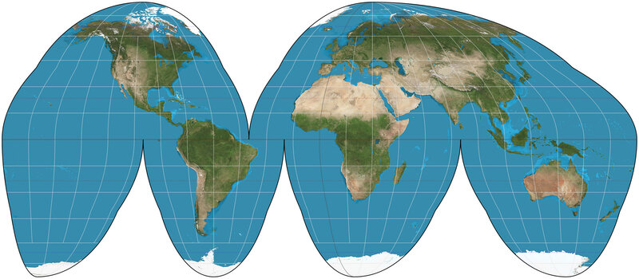
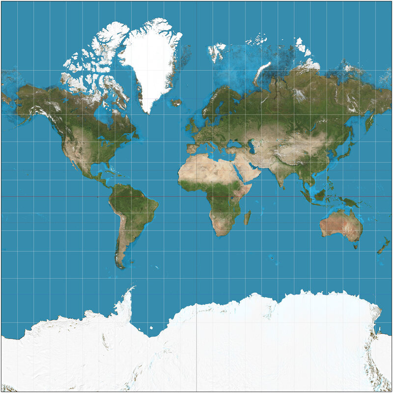

좌표 하나로는 지구를 담을 수 없다
출발 문제
오렌지 하나를 떠올려 보자. 껍질을 벗겨서 식탁 위에 평평하게 펴려고 하면 어떻게 되는가? 반드시 찢어진다. 억지로 펼치면 어딘가가 겹치고, 어딘가가 늘어나고, 어딘가가 구겨진다. 구면의 껍질을 평면 위에 왜곡 없이 펼치는 것은 불가능하다.

지도 제작자들은 이 사실을 수백 년간 체감해 왔다. 16세기 항해가들에게 정확한 세계지도는 생사의 문제였다. 1569년, 플랑드르의 지리학자 헤라르뒤스 메르카토르(Gerardus Mercator)는 유명한 메르카토르 도법을 발표한다. 이 지도에서 항해사는 직선으로 코스를 그으면 되므로 항해에 편리했다. 하지만 대가가 있었다 — 그린란드가 아프리카와 비슷한 크기로 보인다. 실제로는 아프리카가 14배 넓다.

메르카토르 도법만의 문제가 아니다. 어떤 도법을 쓰든 왜곡은 피할 수 없다. 면적을 보존하면 각도가 틀어지고, 각도를 보존하면 면적이 뒤틀린다. 거리, 면적, 각도를 동시에 보존하는 세계지도는 존재하지 않는다. 이것은 취향의 문제가 아니라 수학적 불가능성이다.
그렇다면 질문을 바꿔보자: 완벽한 지도 한 장이 불가능하다면, 여러 장의 불완전한 지도로는 어떨까?
패턴
실제로 우리는 이미 이 방법을 쓰고 있다. 세계지도책(atlas)을 펼쳐 보라. 한 장에 전 세계를 담으려 하지 않는다. 유럽, 아시아, 아메리카 — 각각의 지역을 별도의 페이지에 그린다. 각 페이지에서는 왜곡이 작다. 해당 지역 안에서는 거리와 방향이 대체로 정확하다.
문제는 겹치는 부분이다. 유럽 지도와 아시아 지도가 만나는 곳 — 터키 근처 — 에서, 같은 도시가 두 장의 지도에 모두 나타난다. 이스탄불은 유럽 지도에서는 오른쪽 끝에, 아시아 지도에서는 왼쪽 끝에 있다. 유럽 지도의 좌표
여기서 핵심적인 구조가 드러난다:
-
각 조각은 평면처럼 다룰 수 있다. 충분히 작은 영역에서는 지구 표면이 사실상 평평하다. 동네 지도에서 곡률을 느끼는 사람은 없다.
-
조각들이 겹치는 곳에서는 번역 규칙이 있어야 한다. 유럽 좌표를 아시아 좌표로, 또는 그 반대로 변환하는 함수가 있어야 한다. 이 함수는 부드러워야(미분 가능해야) 한다 — 갑자기 좌표가 점프하면 곤란하니까.
-
이 번역 규칙들이 서로 모순이 없어야 한다. A → B → C로 가든, A → C로 직접 가든, 결과는 같아야 한다.
이것이 바로 수학자들이 "매니폴드"라고 부르는 것의 핵심 아이디어다. 한 장의 완벽한 지도 대신, 여러 장의 부분 지도와 그것들 사이의 번역 규칙을 들고 다니는 것.
비디오 게임에서 더 친숙한 예를 들어 보자. 팩맨에서 캐릭터가 화면 왼쪽 끝으로 나가면 오른쪽에서 나타난다. 위로 나가면 아래에서 나타난다. 화면은 직사각형이지만, 이 “감기(wrapping)” 규칙 때문에 팩맨이 실제로 살고 있는 공간은 토러스(도넛 표면)이다. 화면의 좌표

정리
이 패턴을 정리하면 다음과 같다:
국소적으로
처럼 보이는 공간은, 으로의 좌표 사상들(차트)의 모음과 겹치는 영역에서의 부드러운 변환 규칙(전이함수)으로 완전히 기술할 수 있다.
여기서 "국소적으로
-
하우스도르프 조건: 서로 다른 두 점은 언제나 겹치지 않는 작은 동네로 떼어 놓을 수 있어야 한다. 이 조건이 없으면 “원점만 두 개로 겹쳐 있는 직선” 같은 기괴한 공간도 매니폴드가 되어 버린다. 그 공간에서는 두 원점 중 어느 쪽 주변을 아무리 작게 잡아도 다른 쪽 주변과 겹친다.
-
제2가산 조건: 셀 수 있는 개수의 열린 집합만으로 모든 열린 집합을 짜 맞출 수 있어야 한다. 넓이가 무한하면 안 된다는 뜻은 아니다. 평면
도 끝없이 넓지만, 중심과 반지름이 유리수인 원판들만으로 충분하다. 이 조건은 “조각마다 한 일을 부드럽게 이어 붙이는” 단위 분할(partition of unity)이라는 도구를 쓰는 데 필요하다.
두 조건은 처음 보면 기술적이고 추상적으로 느껴지지만, 이것들이 없으면 이후에 하고 싶은 일(미분, 적분, 곡률 측정)이 제대로 정의되지 않는다. 무대에 비유하면, 두 배우가 같은 자리에 겹쳐 서 있을 수 없어야 하고(하우스도르프), 무대 전체를 셀 수 있는 개수의 조명으로 빠짐없이 비출 수 있어야 한다(제2가산).
정의
이제 정확한 정의를 적을 준비가 되었다. 각 정의가 위의 이야기에서 어디에 해당하는지 확인하며 읽어 보라.
-
매니폴드 (국소 평탄 공간 / Locally Flat Space) — 각 점 주변이
처럼 생긴 공간. 지구 표면은 2차원 매니폴드이다: 어느 점이든 주변을 보면 평면과 구별할 수 없다. 을 매니폴드의 차원이라 한다. -
좌표계/차트 (이름표 체계 / Labeling System) — 매니폴드의 한 조각(열린 부분집합)
를 에 대응시키는 함수 . 지도책의 한 페이지에 해당한다. 차트는 쌍 로 쓴다. -
아틀라스 (좌표 모음집 / Chart Collection) — 매니폴드 전체를 덮는 차트들의 집합
. 이름 그대로, 세계지도책이다. 모든 점이 최소한 하나의 차트에 속해야 한다. -
전이함수 (좌표 번역기 / Coordinate Translator) — 겹치는 영역
에서 한 좌표를 다른 좌표로 변환하는 함수 . 이 함수가 부드러우면( 이면) 두 차트가 "호환된다"고 말한다. 아틀라스의 모든 차트 쌍이 호환되면 부드러운 아틀라스라 한다.

구면
두 차트가 겹치는 영역(북극과 남극을 모두 뺀 부분)에서 한 차트의 좌표를 다른 차트의 좌표로 바꾸는 전이함수는 놀랍도록 간단하다.
이것은 단위원을 거울 삼아 안과 밖을 뒤집는 반전(inversion)이다. 적도는 두 차트 모두에서 단위원 위에 놓이고, 북반구는
따라 계산해 보기 — 원을 두 장의 각도 지도로 덮기
원
- 차트 1: 점
을 뺀 원, 각도 - 차트 2: 점
을 뺀 원, 각도
두 차트가 겹치는 곳은 두 점을 모두 뺀 원, 곧 윗반원과 아랫반원 두 조각이다. 윗반원에서는 두 각도가 같다. 아랫반원에서는 사정이 달라서, 점
전이함수가 식 하나가 아니라 두 조각으로 되어 있다는 점이 눈에 띈다. 그래도 각 조각은 기울기가 1인 직선이라 무한히 미분 가능하고,
핵심 인물과 일화
베른하르트 리만 (Bernhard Riemann, 1826–1866)

1854년 6월 10일, 괴팅겐 대학교. 스물일곱 살의 수학자 베른하르트 리만이 교수자격 취득을 위한 강연 무대에 선다. 청중 속에는 그의 스승이자 당대 최고의 수학자 카를 프리드리히 가우스가 앉아 있다.
관례상 후보자는 세 가지 주제를 제안하고, 심사위원회가 그중 하나를 고른다. 리만은 세 번째 주제를 "기하학의 기초에 놓여 있는 가설에 대하여(Über die Hypothesen, welche der Geometrie zu Grunde liegen)"라고 적어 넣었다 — 가장 선택될 가능성이 낮다고 판단했기 때문이다. 그런데 가우스가 정확히 그 주제를 골랐다. 이 선택은 리만을 몇 주간의 고뇌로 몰아넣었지만, 결과적으로 수학사에서 가장 영향력 있는 강연 중 하나가 탄생한다.
리만의 핵심 통찰은 이것이었다: 유클리드 기하학은 기하학의 유일한 형태가 아니다. 공간이란 국소적으로 좌표를 붙일 수 있는 임의의 대상이며, 그 위에서 거리와 곡률은 장소마다 달라질 수 있다. 이 강연에서 리만은 오늘날 우리가 "매니폴드"라고 부르는 개념의 씨앗을 뿌렸다 — 전체를 하나의 좌표로 덮을 수 없지만, 조각마다 좌표를 붙이고 조각 사이의 번역 규칙을 정하면 되는 공간.
가우스는 이 강연을 듣고 집으로 돌아가며 동료에게 "깊은 감명을 받았다"고 말했다고 전해진다. 하지만 리만의 아이디어가 물리학에서 꽃을 피우려면 60년이 더 필요했다 — 1915년, 아인슈타인이 일반상대성이론에서 시공간을 4차원 매니폴드로 기술했을 때.
리만 자신은 결핵으로 서른아홉에 세상을 떠났다. 그가 남긴 강연 원고는 불과 수십 쪽이었지만, 그 안에는 이후 150년간 전개될 미분기하학의 프로그램 전체가 담겨 있었다.
직접 움직여 보기
두 입체사영 차트로 구면을 덮은 아틀라스다. 두 평면 중 어느 쪽에서든 점을 끌면 구면 위의 점이 따라 움직이고, 구면은 끌어서 돌려 볼 수 있다. 점을 북극 쪽으로 가져가면서
연습문제
- 확인 다음 중 매니폴드가 아닌 것은? (가) 원 (나) 숫자 8 모양의 곡선 (다) 구면 (라) 가장자리를 뺀 원판
- 계산 단위구 위의 두 점
, 의 좌표와 좌표를 구하라. 전이함수로 좌표를 번역하면 좌표가 나오는지 확인하고, 북극 에서는 어떻게 되는지 설명하라. - 킬러 위아래 뚜껑이 없는 원기둥 옆면
을 덮으려면 차트가 최소 몇 개 필요한가? 구면과는 무엇이 다른가?
함께 풀어 보기
문제 1 — 숫자 8은 매니폴드인가
선생님네 개 중에 매니폴드가 아닌 걸 골라 볼까요?
김민준다 매니폴드 아니에요? 8자는 원 두 개를 붙인 거잖아요. 원이 매니폴드면 두 개 붙여도 매니폴드일 것 같은데요.
이서연붙인 자리가 걸리는데. 가운데 교차점을 확대하면 선이 네 갈래로 뻗어 있잖아.
선생님서연 학생 말대로 확대해 봅시다. 민준 학생, 원 위의 아무 점이나 아주 작게 확대하면 뭐가 보여요?
김민준짧은 선분이요. 양쪽으로 한 줄씩 뻗은 거요.
선생님8자의 교차점을 확대하면요?
김민준아, X자네요. 선분이랑 X는 다르죠. 선분에서 가운데 한 점을 빼면 두 조각인데, X에서 가운데를 빼면 네 조각이 되니까요.
선생님바로 그거예요. 매니폴드는 모든 점에서 확대한 모양이
김민준조별 보고서 같네요. 다른 절이 다 멀쩡해도 한 사람이 맡은 절이 양식이 다르면 조교가 바로 돌려보내잖아요.
문제 2 — 두 장의 지도에서 같은 점 읽기
김민준numpy로 먼저 돌려 봤어요.
이서연너
선생님곱할지 나눌지 헷갈릴 때 쓸 수 있는 검산이 하나 있어요. 적도는 두 차트에서 어디로 가죠?
김민준둘 다 단위원이요. 그러면 북반구에 있는
김민준PyTorch 과제에서 역행렬 대신 행렬을 곱해 놓고 조교한테 “단위벡터 하나 넣어서 검산은 해 봤어요?” 소리 들었던 거랑 똑같아요.
이서연
선생님한번 잡아 보세요. 경도는 고정하고, 북극에서 각도
이서연
선생님그래서 북극은
이서연해석학 시간에
문제 3 — 원기둥에는 차트가 몇 장 필요한가
선생님이번 문제는 천천히 가 봅시다. 원기둥 옆면에 차트는 최소 몇 장 필요할까요?
김민준한 장이요. 가위로 세로로 한 줄 자르면 직사각형으로 펴지잖아요. 직사각형은 평면이니까 끝이에요.
이서연난 두 장. 원기둥은 원이랑 구간을 곱한 거고, 원은 차트가 최소 두 장 필요하잖아. 곱해도 두 장은 있어야지.
선생님답이 갈렸네요. 민준 학생, 가위로 자른 선 위의 점은 어느 차트에 들어가요?
김민준어… 자른 선은 직사각형의 왼쪽 끝이기도 하고 오른쪽 끝이기도 한데요. 열린 직사각형으로 잡으면 그 선이 빠지고, 닫힌 걸로 잡으면 한 점이 두 군데로 가네요.
선생님차트는 한 조각을 평면의 열린 집합에 일대일로 보내야 해요. 잘라서 펴는 건 솔기 한 줄을 버리는 일이라, 그 줄을 덮을 차트가 하나 더 필요해져요.
김민준그럼 서연이 말대로 두 장이네.
이서연그런데 이상해. 원에 두 장이 필요했던 건 원이 컴팩트해서잖아. 원 전체를 차트 하나로 보내면 그 상은 컴팩트하면서 열린 집합이어야 하는데, 직선에 그런 집합은 없으니까. 그런데 원기둥은 위아래가 열려 있어서 컴팩트가 아니야. 그러면 그 논리가 안 먹혀.
선생님좋은 지적이에요. 논리가 안 먹힌다는 건 한 장으로 될 수도 있다는 뜻이죠. 평면에서 원을 한 바퀴 품고 있으면서 열린 집합을 하나 떠올려 볼래요?
김민준가운데가 뚫린 고리요! 과녁판에서 한가운데를 뺀 거요.
선생님그 고리 위에 원기둥을 어떻게 올릴까요?
이서연높이를 반지름으로 바꾸면 돼. 아래 가장자리는 안쪽 원으로, 위 가장자리는 바깥 원으로 보내는 거야.
이서연거꾸로도 갈 수 있어. 고리 안의 점
김민준그럼 내 답 한 장은 맞은 거네?
선생님답은 맞았지만 이유가 틀렸어요. 가위로 잘라 펴는 게 아니라, 안쪽으로 눌러서 고리로 펴는 거예요. 서연 학생은 이유를 따지다가 스스로 반례를 찾았고요.
김민준중간고사에서 답만 맞고 풀이에 0점 받았던 기억이 나네요. 조교님이 "답이 맞은 건 우연"이라고 써 놓으셨는데.
이서연나는 "부품에 필요한 장 수를 곱하면 전체에 필요한 장 수"라는 생각부터 버려야겠다. 위상수학 시간에도 곱공간 성질을 부품에서 그대로 가져왔다가 반례 맞은 적 있거든.
선생님그래서 구면이 차트 한 장으로 안 되는 진짜 이유는 "둥글어서"가 아니라 “닫혀 있어서”, 곧 컴팩트해서예요. 이 장의 첫 질문이었던 지구가 바로 그 경우죠.
연결되는 세계들
| 분야 | 연결 |
|---|---|
| 위상수학 | 매니폴드의 위상적 분류, 오일러 수, 호몰로지 |
| 물리학 | 일반상대론의 시공간 = 4차원 유사-리만 매니폴드 |
| 데이터 과학 | 매니폴드 가설: 고차원 데이터는 저차원 매니폴드 위에 놓여 있다 |
| 로보틱스 | 관절 로봇의 배위공간(configuration space)은 매니폴드 |
| 통계학 | 확률분포의 모임 = 통계적 매니폴드 |